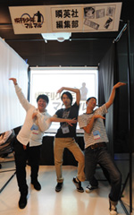
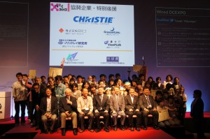

国際学生対抗バーチャルリアリティコンテスト（IVRC2012）で世界3位および重賞受賞で3冠達成
10月25日～27日、日本科学未来館で行われたデジタルコンテンツエキスポ（DCEXPO2012）において、第20回国際学生対抗バーチャルリアリティコンテスト（IVRC2012）の本戦が行われ、情報メディア学科と大学院情報工学専攻の学生を中心に構成する「Kait Future Creators!!（KFC）」が3位を受賞し、さらに川上記念特別賞、未来観客賞、クリスティデジタルシステムズ賞の3つの重賞をあわせて受賞して3冠を達成しました。
IVRC とは、”International collegiate Virtual Reality Contest”の略で、バーチャルリアリティやロボットといった先端技術を用いたインタラクティブな作品のコンテストです。書類審査、プレゼンテーション審査、予選大会といった厳しいステージを勝ち上がった国内外9チームが、この決勝大会でそれぞれ企画・制作した作品の展示を行い最終審査となりました。
「Kait Future Creators!!（KFC）」は夢の実現プロジェクト2012年度採択プロジェクトで、作品は、『瞬刊少年マルマル』という、スクリーンにマンガのコマと吹き出しセリフ・背景・カメラで体験者のリアルタイムのポーズが撮影され、体験者が思うままにキャラクターを演じることで、体験者の個性を反映したマンガを作りあげるというもので、展示会場では大人気となりました。
IVRC決勝大会に出場して
情報メディア学科4年 奈良優斗
IVRC2012の約半年に渡る長い戦いが終了し、今では寂しい気さえしています。
IVRC2012の審査は4段階に分かれており、書類審査→プレゼンテーション審査→予選大会→決勝大会と進んでいきます。企画書を作り、プレゼンをし、認められたところで初めて制作にとりかかることができます。

瞬刊少年マルマル：自動生成されたマンガの一例
今回、制作した作品は、マンガの中に体験者が入り込み、物語の主人公となって様々なポーズをとることで、そのポーズが反映されたオリジナルのマンガを作ることができます。
Kinectとプロジェクターを使った大掛かりなエンタテイメント作品で、プログラムはXNAというビデオゲームのための言語を使っています。科学的には違和感のない映像を作る技術、人間の姿勢を「編集長チェック」という得点システムで評価しているところが難しい点ではありました。
マンガは情報工学専攻修士1年の小出さんがすべて直筆で描いています。
そこに自然な体験が実現できるよう少年マンガ自身がもつ特徴をスクリプトという設定ファイルに作りこんでいきます。
機材的にはプロジェクター解像度が足らず、体験中のマンガの中での表情が体験者に伝わらないなど、不満な部分もあります。
また予選大会から決勝大会の間の短い時間に、TV番組への出演が舞い込み、作品のブラッシュアップとTV向けの演出の追加開発を同時に行わなければならず、プロジェクトマネジメント的にも大変な経験を積むことができたと思います。
決勝大会の結果は、世界第3位にあたる「川上記念特別賞」、日本科学未来館のお客さんが選ぶ「未来観客賞」，企業賞である「クリスティデジタルシステムズ社賞」の3つの賞を頂くことができました。『テーマパークで働きたい』という夢を持つ自分が、テーマパークの演出で使用されているクリスティ社の企業賞（副賞は某有名テーマパークの見学ツアー！）や、国立唯一の科学館である日本科学未来館に来場された方の人気投票の結果である未来観客賞を受賞できた事、また何よりも大勢の方から「楽しい」「面白い」というお言葉を頂き、本当に嬉しく思っています。
{kind=link}
世界的なプロジェクターメーカーであるクリスティ・デジタル・システムズ社賞を受賞。副賞はあの「夢の国」…。
奈良 優斗（情報メディア学科4年）
藤村 航（大学院情報工学専攻1年）
小出 雄空明（大学院情報工学専攻1年）
「瞬刊少年マルマル」という企画にあるこだわり
小出 雄空明（大学院情報工学専攻1年）
「瞬刊少年マルマル」はマンガに入り込んで演じることでマンガを作り上げる企画ですが、マンガに入りキャラクターを演じることは多くの人にはハードルが高いことでもあります。そこで、レベルデザインや企画を体験者にスムーズに理解してもらうことに気を使い、マンガの中に入り楽しみ、作ったオリジナル漫画を持って帰るという体験の中で、体験者には最初から最後まで楽しんで頂くことを一番に重視しました。体験して頂いた方々の楽しそうな雰囲気を見られたときが一番うれしかったです。
多くの体験者してくれた方々の楽しんでいる姿を見れたことや何度も体験していただけるような作品を作れたことをうれしく思います、ありがとうございました。残念ながら優勝はできませんでしたが、沢山の方に「楽しい」「面白い」というお声を頂けて本当に嬉しかったです。「瞬刊少年マルマル」はこれからも多くの場所で展示させていただきます。お時間がありましたらぜひお越しください。
小出 雄空明（大学院情報工学専攻1年）
http://www.youtube.com/watch?v=lKKJ6fTsCRk
教員からメッセージ
{kind=link}
KFCの世話役である情報メディア学科・白井暁彦准教授は、「IVRCには過去数年に渡りチャレンジしていますが、2010年、2011年の“ファイナルに残った”という状態から、有名大学・国立大学の常連校の中、一気に押しも押されぬ重賞授賞、3冠達成となりました。コンテンツ面の作りこみと技術的な難度の融合、そしてチーム一丸となって健闘した結果だと思います。ここから先は、研究室のプロジェクトとして、世界をステージに研究要素の盛り込みと、作品の改善を重ね、エンタテイメントシステム、コンテンツ工学の未来を開拓し、より自己実現に繋がるような活動になるような支援していきたいと思います。」と感想を述べました。
本作品は11月3～4日に開催される「幾徳祭2012」にて展示公開されます。
詳細は白井研究室（K1-501室）およびホームページ（www.shirai.la）にて！
【メディアでの取り扱い】
TBS深夜特番「アノ大学の天才おバカさん研究所！」
http://www.shirai.la/topics/news/20121009TBS
ロケットニュース24「【DCEXPO2012】注目の最新技術「新感覚タッチパネル」「次世代ビデオ会議システム」など」
http://rocketnews24.com/2012/10/26/260603/
大学広報
http://www.kait.jp/news/470.html
【Kait Future Creators!!】
http://www.shirai.la/kfc
※本記事は
http://www.shirai.la/topics/news/IVRC2012Won
からのサイト移行に伴う再掲載です。